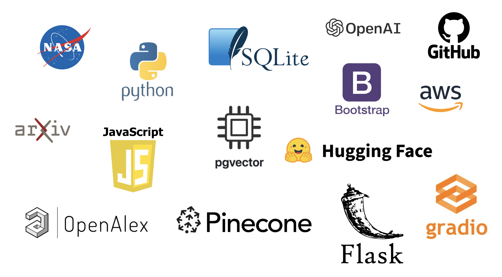

Research Assistant Tasks
Existing Solutions
- NTRS
- Science Discovery Engine (Beta)
NTRS Search
Science Discovery Engine

Science Discovery Engine Search
Our Solution
Using the OpenAI API to produce embeddings of article titles and abstracts allows us to utilize cosine similarity in order to facilitate "semantic search"
Solution Overview
Solution Overview
Tech Stack
Semantic Search via Cosine Similarity
Prototype
NTRS Search Results
Science Discovery Engine Search Results
Results Summary
An empirical comparison of the results produced by the search modalities
NTRS
-
Ageing Mechanisms and Control Specialists’ Meeting on Life Management Techniques for Ageing Air Vehicles
-
Emerging and Future Computing Paradigms and Their Impact on the Research, Training, and Design Environments of the Aerospace Workforce
-
The Shock and Vibration Bulletin: Part 2 - Invited Papers, Space Shuttle Loads and Dynamics, Space Shuttle Data Systems, Shock Testing, Shock Analysis Space Shuttle Thermal Protection Systems
-
The impact of space research expenditures on urban and regional development
-
Software productivity improvement through software engineering technology
Science Discovery Engine (Beta)
-
SUP15.FINAL1
-
ARSET - Remote Sensing for Monitoring Land Degradation and Sustainable Cities SDGs
-
Microsoft Word - sup-15rept.txt
-
ALGORITHM THEORETICAL BASIS DOCUMENT FOR MODIS PRODUCT MOD-27 OCEAN PRIMARY PRODUCTIVITY (ATBD-MOD-24)
-
Pick-and-eat Salad-crop Productivity, Nutritional Value, and Acceptability to Supplement the ISS Food System (Veg-05)
Our Prototype: Suggested NTRS Articles
-
Collaborative Product Development in an R&D Environment
-
Some effects of time usage patterns on the productivity of engineers
-
Improving Customer Satisfaction in an R and D Environment
-
Impact of the International Space Station Research Results
-
Concurrent Engineering for the Management of Research and Development
Our Prototype: Suggested arXiv.org Articles
-
Impact of Software Engineering Research in Practice: A Patent and Author Survey Analysis
-
Are Happy Developers more Productive? The Correlation of Affective States of Software Developers and their self-assessed Productivity
-
A measure of total research impact independent of time and discipline
Key Takeaways
-
Results returned by our prototype appear to be novel (compared to existing solutions)
-
Our methodology and tech stack is leading-edge
-
There are limitations that might (eventually) be overcome by Apache Lucene